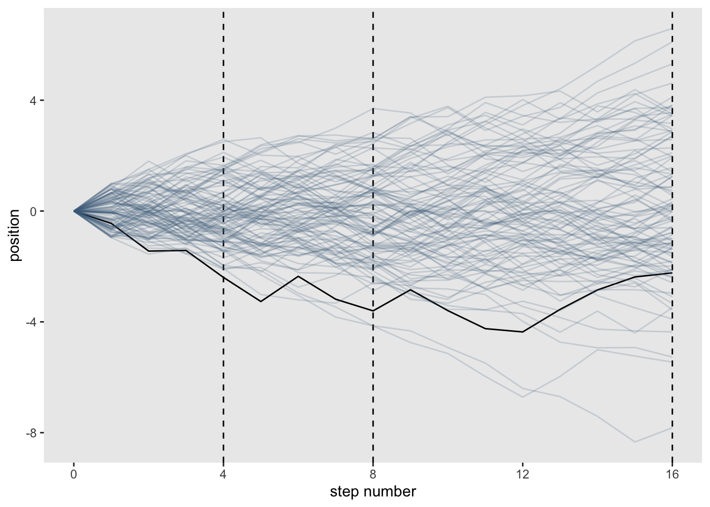
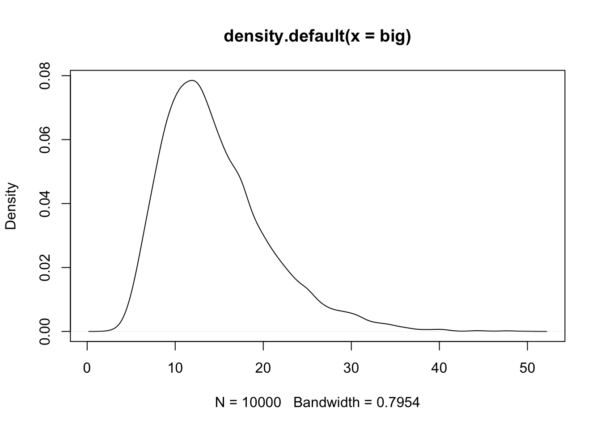
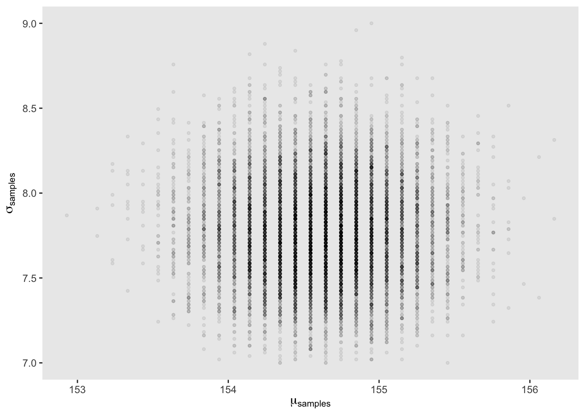
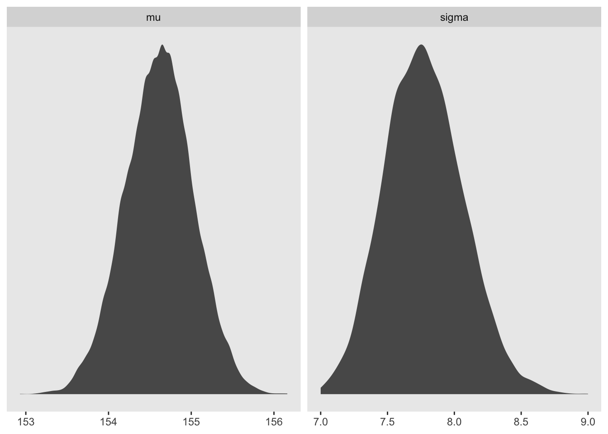
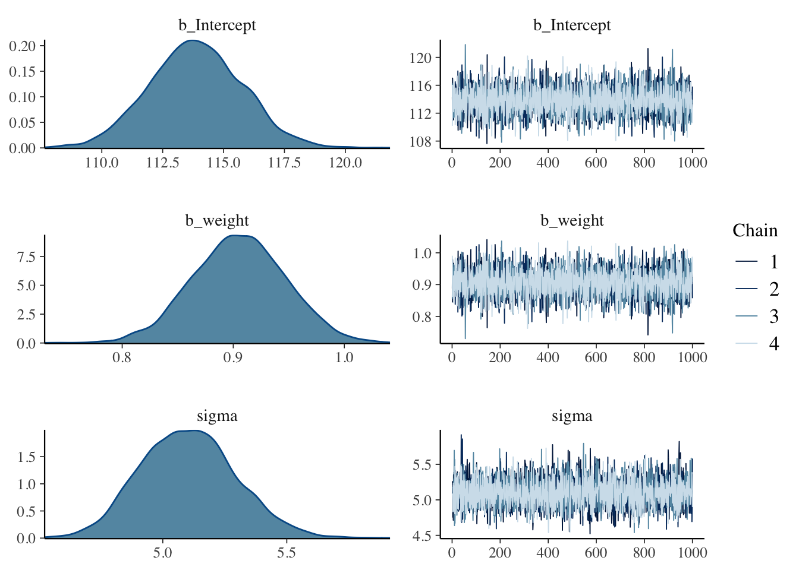
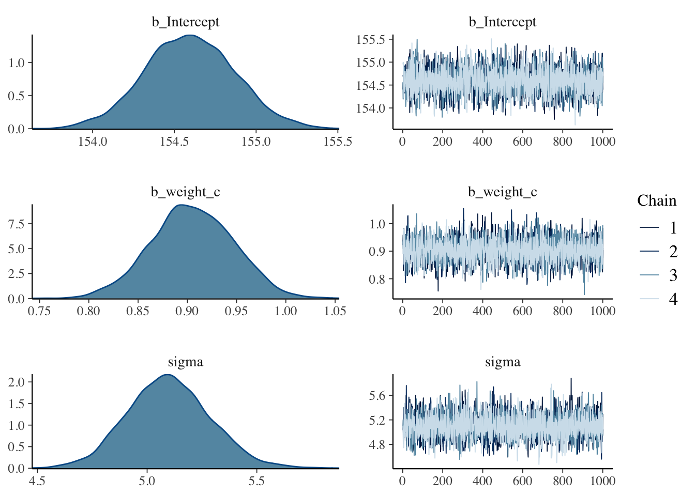
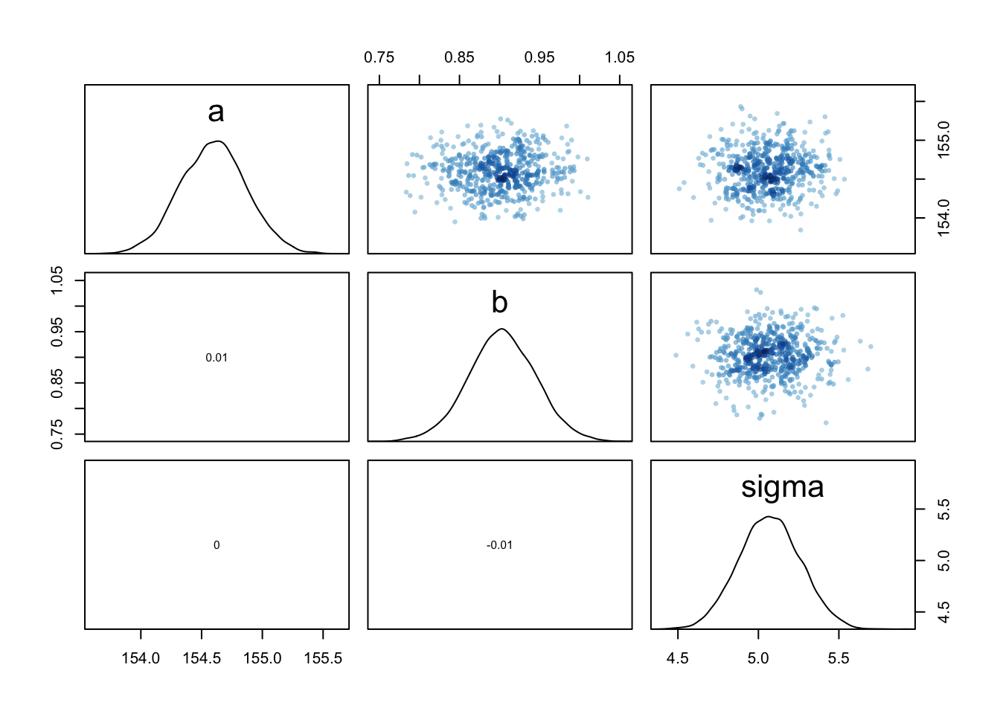
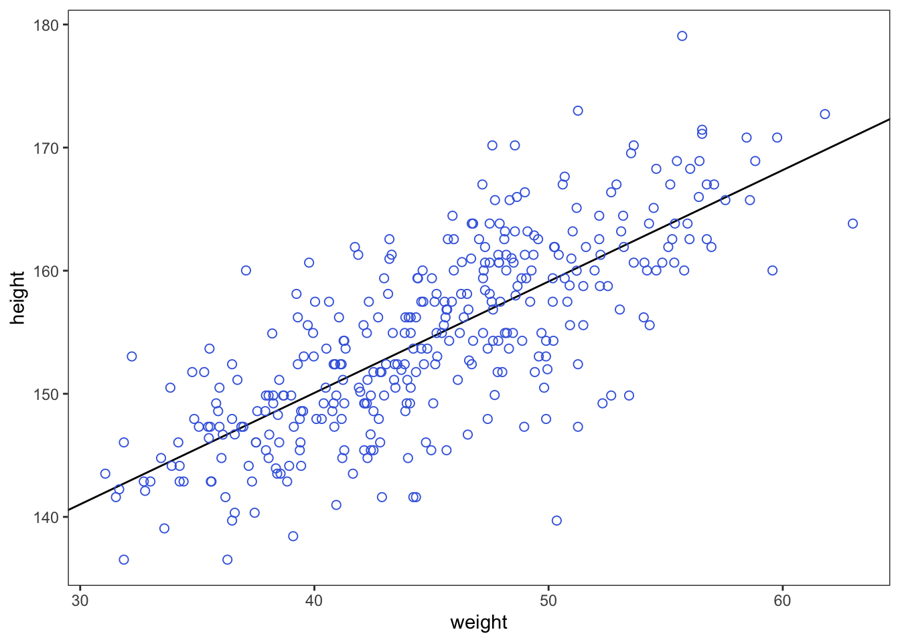

Chapter 4 Geocentric models
This chapter introduces linear regression as a Bayesian procedure. Under a probability interpretation, which is necessary for Bayesian work, linear regression uses a Gaussian (normal) distribution to describe our golem’s uncertainty about some measurement of interest. This type of model is simple, flexible, and commonplace. Like all statistical models, it is not universally useful. But linear regression has a strong claim to being foundational, in the sense that once you learn to build and interpret linear regression models, you can more easily move on to other types of regression which are less normal. >p. 71
4.1 Why normal distributions are normal
Imagine there are 1000 people standing on the center line of a soccer field and they each have a coin. They each toss their coin 16 times and with each toss, heads means one step left, and tails means one step right. After everyone has done their 16 tosses, can you imagine the distribution of where they would be on the field? It would be roughly normal centered on the center of the field.
4.1.1 Normal by addition
To simulate this in R we can assign random values that are either left (-1) or right (1) for each coin toss and then add them together.
pos <- replicate(1000, sum(runif(16,-1,1)))
plot(density(pos)) Now lets visualize what each person’s walk
Now lets visualize what each person’s walk
#load packages
library(dplyr)##
## Attaching package: 'dplyr'## The following objects are masked from 'package:stats':
##
## filter, lag## The following objects are masked from 'package:base':
##
## intersect, setdiff, setequal, unionlibrary(tidyr)
library(ggplot2)## Warning: package 'ggplot2' was built under R version 4.1.2#set seed for reproducible plots
set.seed(11)
#create dataframe
pos_df <- replicate(100, runif(16, -1, 1)) %>% #simulation (turned down to 100 people)
as_tibble() %>% # make it a tibble
rbind(0, .) %>% # add a row of zeros above the coin tosses as a starting point
mutate(step = 0:16) %>% #this is the step index
gather(key, value, -step) %>% #this will convert the data into long format
mutate(person = rep(1:100, each = 17)) %>% #this adds a person index (17 times for the 0 and 16 coins)
group_by(person) %>% #for each person value
mutate(position = cumsum(value)) %>% #create a cumulative sum for each person
ungroup()## Warning: The `x` argument of `as_tibble.matrix()` must have unique column names if `.name_repair` is omitted as of tibble 2.0.0.
## Using compatibility `.name_repair`.#create plot
pos_df %>%
ggplot(aes(x = step, y = position, group = person)) +
geom_vline(xintercept = c(4, 8, 16), linetype = 2) +
geom_line(aes(color = person < 2, alpha = person < 2)) +
scale_color_manual(values = c('skyblue4','black')) +
scale_alpha_manual(values = c(1/5, 1)) +
scale_x_continuous('step number', breaks = c(0, 4, 8, 12, 16)) +
theme(legend.position = 'none',
panel.grid = element_blank())
You can see that the more steps you add, the more normal the distribution becomes.
4.1.2 Normal by multiplication
Suppose that an organism’s growth rate is influenced by 12 loci each with several alleles that code for more growth and that these loci can interact with each other causing multiplicative effects
set.seed(11)
prod(1 + runif(12, 0, 0.1))## [1] 1.448587Or more explicitly:
set.seed(11)
a = 1
b = runif(12, 0, 0.1)
c = a + b
prod(c)## [1] 1.448587as a density:
set.seed(11)
growth <- replicate(10000, prod(1 + runif(12, 0, 0.1)))
plot(density(growth))
Now see how the distribution behaves if you change the effect size of the loci
set.seed(11)
big <- replicate(10000, prod(1 + runif(12, 0, 0.5)))
plot(density(big))
set.seed(11)
small <- replicate(10000, prod(1 + runif(12, 0, 0.01)))
plot(density(small))

4.2 A language for describing models
Learning the language
1. Recognize the variables you are working with. Observable variables are data and unobservable variables are parameters
2. Define the variable in terms of the other variables or as probability distributions
3. The combination of variables and probability distributions are joint generative models that can be used to simulate hypothetical observations as well as analyze real ones
Summarize the model in a mathy way:
\[\begin{equation} y_{i} ~ \text{Normal}(\mu_{i}, \sigma)\ \mu_{i} ~ \beta x_{i}\ \beta ~ \text{Normal}(0, 10)\ \sigma ~ \text{Exponential}(1)\ x_{i} ~ \text{Normal}(0,1)\ \end{equation}\]
4.2.1 Re-describing the globe tossing model.
Recall that the globe tossing model had the variables defined as:
\[\begin{equation} W ~ \text{Binomial}(N, p)\ p ~ \text{Uniform}(0, 1) \end{equation}\]
These definitions have implied meanings. For example, the Binomial distribution of \(W\) implies that each toss (\(N\)) is independent of the others. The first line of these simple models are the likelihood function from Bayes’ theorem. The other lines will outline priors for variables if defined.
4.3 Gaussian model of height
In this section we will build the beginnings of a regression model that will follow a gaussian distribution with a mean \(\mu\) and standard deviation \(\sigma\). The model will take in data or a predictor variable and evaluate all possible values of \(\mu\) and \(\sigma\) to produce a distribution of distributions basically.
4.3.1 The data
Let’s load up McElreath’s data
library(rethinking)## Loading required package: rstan## Warning: package 'rstan' was built under R version 4.1.2## Loading required package: StanHeaders## rstan (Version 2.21.7, GitRev: 2e1f913d3ca3)## For execution on a local, multicore CPU with excess RAM we recommend calling
## options(mc.cores = parallel::detectCores()).
## To avoid recompilation of unchanged Stan programs, we recommend calling
## rstan_options(auto_write = TRUE)##
## Attaching package: 'rstan'## The following object is masked from 'package:tidyr':
##
## extract## Loading required package: cmdstanr## Warning: package 'cmdstanr' was built under R version 4.1.3## This is cmdstanr version 0.5.3## - CmdStanR documentation and vignettes: mc-stan.org/cmdstanr## - Use set_cmdstan_path() to set the path to CmdStan## - Use install_cmdstan() to install CmdStan## Loading required package: parallel## rethinking (Version 2.21)##
## Attaching package: 'rethinking'## The following object is masked from 'package:rstan':
##
## stan## The following object is masked from 'package:stats':
##
## rstudentdata(Howell1)
d <- Howell1Now we can see the new data frame
str(d)## 'data.frame': 544 obs. of 4 variables:
## $ height: num 152 140 137 157 145 ...
## $ weight: num 47.8 36.5 31.9 53 41.3 ...
## $ age : num 63 63 65 41 51 35 32 27 19 54 ...
## $ male : int 1 0 0 1 0 1 0 1 0 1 ...precis(d, hist=FALSE) #rethinking package## mean sd 5.5% 94.5%
## height 138.2635963 27.6024476 81.108550 165.73500
## weight 35.6106176 14.7191782 9.360721 54.50289
## age 29.3443934 20.7468882 1.000000 66.13500
## male 0.4724265 0.4996986 0.000000 1.00000And for this model we will just be using height of adults
d2 <- d[d$age >= 18 ,] #create a new data frame that is all rows where age is 18 or greater4.3.2 The Model
We want to model these heights with a Gaussian distribution. Let’s see the data first
dens(d2$height)
This is pretty normal looking so we can go ahead and set the model up to use a Gaussian distirbution to describe the probability distribution of the data. Because we are still unsure about which distribution is the right one, we will leave the mean and standard deviation as variables for now.
\[\begin{equation} h_i ~ \text{Normal}(\mu, \sigma) \end{equation}\]
This is our likelihood function for the model. Next we will need to define our \(\mu\) and \(\sigma\) variables.
\[\begin{equation} \mu ~ \text{Normal}(178, 20) \sigma ~ \text{Uniform}(0, 50) \end{equation}\]
Here McElreath uses 178 cm as the mean because that is his height and spreads the 95% interval 40 cm in either direction (138 - 218cm). Let’s see what this would look like
curve(dnorm(x, 178, 20), from = 100, to = 250)
Here we are looking across heights from 100cm to 250cm and as you can see the normal distribution is putting the the mean between 140 and 220.
\(\sigma\) has a uniform prior that holds its value somewhere between 0 and 50 cm.
curve(dunif(x, 0, 50), from = -10, to = 60)
Here you can see that any value from 0 to 50 has an equal probability of being ‘correct.’ Now we can create something called a Prior Predictive by using the priors we’ve defined to see how they relate to the observed heights.
sample_mu <- rnorm(1e4, 178, 20) #create randome draws from the mu prior
sample_sigma <- runif(1e4, 0, 50) #create random draws from the sigma prior
prior_h <- rnorm(1e4, sample_mu, sample_sigma) #use the priors of mu and sigma to infulence h
dens(prior_h)
4.3.3 Grid approximation of the posterior distribution
Here we will approximate the posterior in detail with grid approximation for learning purposes. First will be the methods presented by McElreath and second I will add a tidyverse version adapted from Kurz
mu_list <- seq(from = 150, to = 160, length.out = 100) #100 equally spaced values from 150 to 160
sigma_list <- seq(from = 7, to = 9, length.out = 100) #100 equally spaced values from 7 to 9
post <- expand.grid(mu = mu_list, sigma = sigma_list) #expand to a grid of all combinations of the above (100 x 100)
post$LL <- sapply(1:nrow(post), function(i) sum(
dnorm(d2$height, post$mu[i], post$sigma[i], log = TRUE))) #calculate the log likelihood for each row of post across the data values of d2$height
post$prod <- post$LL + dnorm(post$mu, 178, 20, TRUE) + dunif(post$sigma, 0, 50, TRUE) #create a product by adding priors to log likelihood
post$prob <- exp(post$prod - max(post$prod)) #Create the posterior probability by taking each product and subtracting the maximum product (while also back transforming to cm)Now we can see the posterior with:
contour_xyz(post$mu, post$sigma, post$prob)
or:
image_xyz(post$mu, post$sigma, post$prob)
In tidyverse language
n <- 100
d_grid <-
as_tibble(mu <- seq(from = 150, to = 160, length.out = n),
sigma <- seq(from = 7, to = 9, length.out = n))
d_grid <- d_grid %>%
tidyr::expand(mu, sigma)
head(d_grid)## # A tibble: 6 × 2
## mu sigma
## <dbl> <dbl>
## 1 150 7
## 2 150 7.02
## 3 150 7.04
## 4 150 7.06
## 5 150 7.08
## 6 150 7.10grid_function <- function(mu, sigma){
dnorm(d2$height, mean = mu, sd = sigma, log = TRUE) %>%
sum()
}
d_grid <- d_grid %>%
mutate(log_likelihood = purrr::map2(mu, sigma, grid_function)) %>%
unnest() %>%
mutate(prior_mu = dnorm(mu, mean = 178, sd = 20, log = TRUE),
prior_sigma = dunif(sigma, min = 0, max = 50, log = TRUE)) %>%
mutate(product = log_likelihood + prior_mu + prior_sigma) %>%
mutate(probability = exp(product - max(product)))## Warning: `cols` is now required when using unnest().
## Please use `cols = c(log_likelihood)`head(d_grid)## # A tibble: 6 × 7
## mu sigma log_likelihood prior_mu prior_sigma product probability
## <dbl> <dbl> <dbl> <dbl> <dbl> <dbl> <dbl>
## 1 150 7 -1299. -4.89 -3.91 -1308. 1.96e-35
## 2 150 7.02 -1298. -4.89 -3.91 -1307. 3.78e-35
## 3 150 7.04 -1298. -4.89 -3.91 -1307. 7.20e-35
## 4 150 7.06 -1297. -4.89 -3.91 -1306. 1.36e-34
## 5 150 7.08 -1296. -4.89 -3.91 -1305. 2.53e-34
## 6 150 7.10 -1296. -4.89 -3.91 -1305. 4.65e-34d_grid %>%
ggplot(aes(x = mu, y = sigma, z = probability)) +
geom_contour() +
labs(x = expression(mu),
y = expression(sigma)) +
xlim(range(d_grid$mu)) +
ylim(range(d_grid$sigma)) +
theme(panel.grid = element_blank())
d_grid %>%
ggplot(aes(x = mu, y = sigma)) +
geom_raster(aes(fill = probability), interpolate = TRUE) +
scale_fill_viridis_c(option = 'A') +
labs(x = expression(mu),
y = expression(sigma)) +
theme(panel.grid = element_blank())
4.3.4 Sampling from the posterior
Now that we have a posterior calculated, we can pull samples from it.
sample_rows <- sample(1:nrow(post), size = 1e4, replace = TRUE, prob = post$prob) #sample rows by their probability
sample_mu <- post$mu[sample_rows] #index samples of mu by the rows sampled
sample_sigma <- post$sigma[sample_rows] #index samples of sigma by rows sampledNow we can plot these samples to see where the most common values for \(\mu\) and \(\sigma\) might overlap
plot(sample_mu, sample_sigma, cex = 1, pch = 16, col = col.alpha(rangi2, 0.1))
We can also look at the samples individually
dens(sample_mu)
dens(sample_sigma)
And we can get summary points from these sample distributions just like before
PI(sample_mu)## 5% 94%
## 153.9394 155.2525PI(sample_sigma)## 5% 94%
## 7.323232 8.252525(tidyverse)
d_grid_samples <- d_grid %>%
sample_n(size = 1e4, replace = TRUE, weight = probability)
d_grid_samples %>%
ggplot(aes(x = mu, y = sigma)) +
geom_point(size = 0.9, alpha = 1/15) +
scale_fill_viridis_c() +
labs(x = expression(mu[samples]),
y = expression(sigma[samples])) +
theme(panel.grid = element_blank())
d_grid_samples %>%
select(mu, sigma) %>%
gather() %>%
ggplot(aes(x = value)) +
geom_density(fill = 'grey35', size = 0) +
scale_y_continuous(NULL, breaks = NULL) +
xlab(NULL) +
theme(panel.grid = element_blank()) +
facet_wrap(~key, scales = 'free')
library(tidybayes)## Warning: package 'tidybayes' was built under R version 4.1.2d_grid_samples %>%
select(mu, sigma) %>%
gather() %>%
group_by(key) %>%
mode_hdi(value)## # A tibble: 2 × 7
## key value .lower .upper .width .point .interval
## <chr> <dbl> <dbl> <dbl> <dbl> <chr> <chr>
## 1 mu 155. 154. 156. 0.95 mode hdi
## 2 sigma 7.75 7.22 8.35 0.95 mode hdid_grid_samples %>%
select(mu, sigma) %>%
gather() %>%
group_by(key) %>%
median_qi(value, .width = 0.5)## # A tibble: 2 × 7
## key value .lower .upper .width .point .interval
## <chr> <dbl> <dbl> <dbl> <dbl> <chr> <chr>
## 1 mu 155. 154. 155. 0.5 median qi
## 2 sigma 7.77 7.57 7.97 0.5 median qi4.3.5 Finding the posterior distribution with quap
Recall that quadratic approximation uses the maximum a posteriori (MAP) as the peak of the distribution and creates the shape of the distribution as a negative quadratic based on the slope near the peak.
To set up, lets rerun the data input
data(Howell1)
d <- Howell1
d2 <- d[d$age >= 18,]Now we have to define our model parameters in R code
flist <- alist(
height ~ dnorm(mu, sigma),
mu ~ dnorm(178, 20),
sigma ~ dunif(0, 50)
)And then we can fit the model to the data
m4.1 <- quap(flist, data = d2)and the posterior is available to view here
precis(m4.1)## mean sd 5.5% 94.5%
## mu 154.606930 0.4120200 153.948443 155.265418
## sigma 7.731809 0.2914308 7.266046 8.197571Changing the prior for \(\mu\) to be quite narrow
m4.2 <- quap(
alist(
height ~ dnorm(mu, sigma),
mu ~ dnorm(178, 0.1),
sigma ~ dunif(0, 50)
), data = d2)
precis(m4.2)## mean sd 5.5% 94.5%
## mu 177.86375 0.1002354 177.70356 178.02395
## sigma 24.51748 0.9289156 23.03289 26.00207notice here that because the prior was so narrow for \(\mu\), the mean did not change much from the prior value. \(\sigma\) on the other hand has vastly changed from the previous example even though its prior remained the same.
4.3.6 Sampling with quap
Because quadratic approximation is inherently multidimensional, we need to access to the different covariances between pairs of parameters. Here is the variance-covariance matrix for the first model.
vcov(m4.1)## mu sigma
## mu 0.1697604695 0.0002160376
## sigma 0.0002160376 0.0849319320The above contains both the variance of each parameter but also the correlated change expected in the other parameters. To see them separately:
diag(vcov(m4.1)) #variance of each parameter (sqrt = sd)## mu sigma
## 0.16976047 0.08493193cov2cor(vcov(m4.1)) #Correlation matrix of the parameters ## mu sigma
## mu 1.000000000 0.001799184
## sigma 0.001799184 1.000000000The correlation matrix above indicates that \(\mu\) and \(\sigma\) are very far from correlated. Now let’s pull vectors of values from a multi-dimenstional distribution (made easy with rethinking)
post <- extract.samples(m4.1, n = 1e4)
head(post)## mu sigma
## 1 154.7748 7.358637
## 2 155.5361 7.869098
## 3 154.4503 7.648488
## 4 154.9172 7.283003
## 5 153.7071 7.978019
## 6 154.6316 8.848559Now we can compare to the posterior samples to the MAP values
precis(post)## mean sd 5.5% 94.5% histogram
## mu 154.610172 0.4093737 153.948552 155.26072 ▁▁▅▇▂▁▁
## sigma 7.728621 0.2873045 7.267368 8.18118 ▁▁▁▂▅▇▇▃▁▁▁▁4.4 Linear Prediction
Now that we have a model for height, we can get to the ‘regression’ part where we add a predictor variable. Let’s add weight to our height model and see what that looks like
data(Howell1); d <- Howell1; d2 <- d[d$age >= 18, ]
plot(d2$height ~ d2$weight)
Seems to be a pretty clear relationship between height and weight. The linear model strategy will take the predictor variable (weight) and assume that it has a constant additive relationship to the mean of the outcome (height). Now we have to put our predictor into the model structure.
\[\begin{equation} h_{i} ~ \text{Normal}(\mu_{i}, \sigma) \mu_{i} = \beta (x_{i} - \overline{x}) \alpha ~ \text{Normal}(178, 20) \beta ~ \text{Uniform}(0, 10) \sigma ~ \text{Uniform}(0, 50) \end{equation}\]
4.4.0.1 Probability of the data (first line of the model)
So now that both height \(h_{i}\) and the mean \(\mu_{i}\) are indexed by \(i\) it means that each data point or row in the dataframe influences the value of \(\mu\) and therefore \(h\).
4.4.0.2 Linear model (second line of the model)
The value of \(\mu_{i}\) is now made from a combination of \(\alpha\), \(\beta\), and observed weight data (\(x\)) where \(\overline{x}\) describes the mean of all weight values observed.
There are two parts to this line in the model that make it ‘linear’
1. When \(x_{i}\) = \(\overline{x}\) then the \(\beta\) value is 0 which makes \(\alpha\) an ‘intercept.’
2. When \(x_{i}\) increases by one unit, the expected change in height (\(h_{i}\)) is explained by \(\beta\) or the ‘slope.’
4.4.0.3 Priors (lines 3-5 of the model)
The \(\alpha\) and \(\sigma\) priors is basically the same as before (except now the \(\mu\) prior is now \(\alpha\)). The \(\beta\) prior is set to have a mean of 0 on purpose because we don’t know for sure what the relationship is between weight and height (even though the plot suggests a positive slope value). To illustrate this point, McElreath simulates the prior predictive distribution using observed weights.
set.seed(2971)
N <- 100 # 100 lines
a <- rnorm(N, 178, 20) # alpha prior
b <- rnorm(N, 0, 10) # beta priorLet’s see how this random selection from the priors looks
plot(NULL, xlim = range(d2$weight), ylim = c(-100, 400),
xlab = 'weight', ylab = 'height')
abline(h = 0, lty = 2) #dashed line at height = 0
abline(h = 272, lty = 1, lwd = 0.5) #solid line at world's tallest person
mtext('b ~ dnorm(0, 10)') #plot title
xbar <- mean(d2$weight) #average weight
for(i in 1:N){
curve(a[i] + b[i]*(x - xbar), #linear equation for each pair
from = min(d2$weight), to = max(d2$weight), add = TRUE,
col = col.alpha('black',0.2))
}
This is clearly absurd as no adult should be near 0 height and weigh 30 kg. We can fix this by holding \(\beta\) positive with a log-normal distribution
b <- rlnorm(1e4, 0, 1)
dens(b, xlim = c(0,5), adj = 0.1)
Now we can use this new \(\beta\) prior in the last plot
set.seed(2971)
N <- 100 # 100 lines
a <- rnorm(N, 178, 20) # alpha prior
b <- rlnorm(N, 0, 1) # NEW beta prior
plot(NULL, xlim = range(d2$weight), ylim = c(-100, 400),
xlab = 'weight', ylab = 'height')
abline(h = 0, lty = 2) #dashed line at height = 0
abline(h = 272, lty = 1, lwd = 0.5) #solid line at world's tallest person
mtext('log(b) ~ dnorm(0, 1)') #plot title
xbar <- mean(d2$weight) #average weight
for(i in 1:N){
curve(a[i] + b[i]*(x - xbar), #linear equation for each pair
from = min(d2$weight), to = max(d2$weight), add = TRUE,
col = col.alpha('black',0.2))
}
This new plot seems far more plausible for an adult population.
4.4.1 Finding the posterior distribtuion
Just like before we can use the quap function to get a quadratic approximation or alternatively, we can use brms to fit the model.
quap method
#re load the data
data(Howell1) ; d <- Howell1; d2 <- d[d$age >= 18,]
#define the mean weight of observed values
xbar <- mean(d2$weight)
#fit the model
m4.3 <- quap(
alist(
height ~ dnorm(mu, sigma), #height likelihood distribution
mu <- a + b*(weight - xbar), #linear equation
a ~ dnorm(178, 20), #alpha prior
b ~ dlnorm(0, 1), #beta prior
sigma ~ dunif(0, 50) #sigma prior
), data = d2
)
precis(m4.3)## mean sd 5.5% 94.5%
## a 154.6013671 0.27030766 154.1693633 155.0333710
## b 0.9032807 0.04192363 0.8362787 0.9702828
## sigma 5.0718809 0.19115478 4.7663786 5.3773831brms method
library(brms)## Loading required package: Rcpp## Warning: package 'Rcpp' was built under R version 4.1.2## Loading 'brms' package (version 2.16.3). Useful instructions
## can be found by typing help('brms'). A more detailed introduction
## to the package is available through vignette('brms_overview').##
## Attaching package: 'brms'## The following objects are masked from 'package:tidybayes':
##
## dstudent_t, pstudent_t, qstudent_t, rstudent_t## The following objects are masked from 'package:rethinking':
##
## LOO, stancode, WAIC## The following object is masked from 'package:rstan':
##
## loo## The following object is masked from 'package:stats':
##
## arb4.3_priors <- get_prior(data = d2, formula = height ~ 1 + weight)
b4.3 <- brm(data = d2, #data to be used
family = gaussian, #likelihood of height
height ~ 1 + weight, #linear equation
prior = b4.3_priors,
iter = 41000, warmup = 40000, chains = 4, cores = 4, seed = 11) #model mechanics## Compiling Stan program...## Trying to compile a simple C file## Running /Library/Frameworks/R.framework/Resources/bin/R CMD SHLIB foo.c
## clang -mmacosx-version-min=10.13 -I"/Library/Frameworks/R.framework/Resources/include" -DNDEBUG -I"/Library/Frameworks/R.framework/Versions/4.1/Resources/library/Rcpp/include/" -I"/Library/Frameworks/R.framework/Versions/4.1/Resources/library/RcppEigen/include/" -I"/Library/Frameworks/R.framework/Versions/4.1/Resources/library/RcppEigen/include/unsupported" -I"/Library/Frameworks/R.framework/Versions/4.1/Resources/library/BH/include" -I"/Library/Frameworks/R.framework/Versions/4.1/Resources/library/StanHeaders/include/src/" -I"/Library/Frameworks/R.framework/Versions/4.1/Resources/library/StanHeaders/include/" -I"/Library/Frameworks/R.framework/Versions/4.1/Resources/library/RcppParallel/include/" -I"/Library/Frameworks/R.framework/Versions/4.1/Resources/library/rstan/include" -DEIGEN_NO_DEBUG -DBOOST_DISABLE_ASSERTS -DBOOST_PENDING_INTEGER_LOG2_HPP -DSTAN_THREADS -DBOOST_NO_AUTO_PTR -include '/Library/Frameworks/R.framework/Versions/4.1/Resources/library/StanHeaders/include/stan/math/prim/mat/fun/Eigen.hpp' -D_REENTRANT -DRCPP_PARALLEL_USE_TBB=1 -I/usr/local/include -fPIC -Wall -g -O2 -c foo.c -o foo.o
## In file included from <built-in>:1:
## In file included from /Library/Frameworks/R.framework/Versions/4.1/Resources/library/StanHeaders/include/stan/math/prim/mat/fun/Eigen.hpp:13:
## In file included from /Library/Frameworks/R.framework/Versions/4.1/Resources/library/RcppEigen/include/Eigen/Dense:1:
## In file included from /Library/Frameworks/R.framework/Versions/4.1/Resources/library/RcppEigen/include/Eigen/Core:88:
## /Library/Frameworks/R.framework/Versions/4.1/Resources/library/RcppEigen/include/Eigen/src/Core/util/Macros.h:628:1: error: unknown type name 'namespace'
## namespace Eigen {
## ^
## /Library/Frameworks/R.framework/Versions/4.1/Resources/library/RcppEigen/include/Eigen/src/Core/util/Macros.h:628:16: error: expected ';' after top level declarator
## namespace Eigen {
## ^
## ;
## In file included from <built-in>:1:
## In file included from /Library/Frameworks/R.framework/Versions/4.1/Resources/library/StanHeaders/include/stan/math/prim/mat/fun/Eigen.hpp:13:
## In file included from /Library/Frameworks/R.framework/Versions/4.1/Resources/library/RcppEigen/include/Eigen/Dense:1:
## /Library/Frameworks/R.framework/Versions/4.1/Resources/library/RcppEigen/include/Eigen/Core:96:10: fatal error: 'complex' file not found
## #include <complex>
## ^~~~~~~~~
## 3 errors generated.
## make: *** [foo.o] Error 1## Start samplingThe plot
plot(b4.3)
The alpha values (b_intercept in brms) appear to be quite different here. This is because we haven’t centered the weight values yet (\(x - \overline{x}\)), so we can do that and run it again.
d2 <- d2 %>%
mutate(weight_c = weight - mean(weight))
b4.3b_priors <- get_prior(data = d2, formula = height ~ 1 + weight_c)
b4.3b <- brm(data = d2, #data to be used
family = gaussian, #likelihood of height
height ~ 1 + weight_c, #linear equation
prior = b4.3b_priors,
iter = 41000, warmup = 40000, chains = 4, cores = 4, seed = 11) #model mechanics## Compiling Stan program...## recompiling to avoid crashing R session## Trying to compile a simple C file## Running /Library/Frameworks/R.framework/Resources/bin/R CMD SHLIB foo.c
## clang -mmacosx-version-min=10.13 -I"/Library/Frameworks/R.framework/Resources/include" -DNDEBUG -I"/Library/Frameworks/R.framework/Versions/4.1/Resources/library/Rcpp/include/" -I"/Library/Frameworks/R.framework/Versions/4.1/Resources/library/RcppEigen/include/" -I"/Library/Frameworks/R.framework/Versions/4.1/Resources/library/RcppEigen/include/unsupported" -I"/Library/Frameworks/R.framework/Versions/4.1/Resources/library/BH/include" -I"/Library/Frameworks/R.framework/Versions/4.1/Resources/library/StanHeaders/include/src/" -I"/Library/Frameworks/R.framework/Versions/4.1/Resources/library/StanHeaders/include/" -I"/Library/Frameworks/R.framework/Versions/4.1/Resources/library/RcppParallel/include/" -I"/Library/Frameworks/R.framework/Versions/4.1/Resources/library/rstan/include" -DEIGEN_NO_DEBUG -DBOOST_DISABLE_ASSERTS -DBOOST_PENDING_INTEGER_LOG2_HPP -DSTAN_THREADS -DBOOST_NO_AUTO_PTR -include '/Library/Frameworks/R.framework/Versions/4.1/Resources/library/StanHeaders/include/stan/math/prim/mat/fun/Eigen.hpp' -D_REENTRANT -DRCPP_PARALLEL_USE_TBB=1 -I/usr/local/include -fPIC -Wall -g -O2 -c foo.c -o foo.o
## In file included from <built-in>:1:
## In file included from /Library/Frameworks/R.framework/Versions/4.1/Resources/library/StanHeaders/include/stan/math/prim/mat/fun/Eigen.hpp:13:
## In file included from /Library/Frameworks/R.framework/Versions/4.1/Resources/library/RcppEigen/include/Eigen/Dense:1:
## In file included from /Library/Frameworks/R.framework/Versions/4.1/Resources/library/RcppEigen/include/Eigen/Core:88:
## /Library/Frameworks/R.framework/Versions/4.1/Resources/library/RcppEigen/include/Eigen/src/Core/util/Macros.h:628:1: error: unknown type name 'namespace'
## namespace Eigen {
## ^
## /Library/Frameworks/R.framework/Versions/4.1/Resources/library/RcppEigen/include/Eigen/src/Core/util/Macros.h:628:16: error: expected ';' after top level declarator
## namespace Eigen {
## ^
## ;
## In file included from <built-in>:1:
## In file included from /Library/Frameworks/R.framework/Versions/4.1/Resources/library/StanHeaders/include/stan/math/prim/mat/fun/Eigen.hpp:13:
## In file included from /Library/Frameworks/R.framework/Versions/4.1/Resources/library/RcppEigen/include/Eigen/Dense:1:
## /Library/Frameworks/R.framework/Versions/4.1/Resources/library/RcppEigen/include/Eigen/Core:96:10: fatal error: 'complex' file not found
## #include <complex>
## ^~~~~~~~~
## 3 errors generated.
## make: *** [foo.o] Error 1## Start samplingplot(b4.3b)
4.4.2 Interpreting the posterior distribution
The model can only report the posterior distribution. This is the right answer to the question you asked. But it’s your responsibility to process the answer and make sense of it.
—McElreath, p.98
You can make sense of model outputs in two ways:
1. read summary tables
2. plot simulations
Reading summary tables becomes rather complicated as the models become more complex.
4.4.2.1 Tables of marginal distributions
precis(m4.3)## mean sd 5.5% 94.5%
## a 154.6013671 0.27030766 154.1693633 155.0333710
## b 0.9032807 0.04192363 0.8362787 0.9702828
## sigma 5.0718809 0.19115478 4.7663786 5.3773831In this table, the first row is the quadratic approximation for \(\alpha\), second is \(\beta\), and finally \(\sigma\).
repeated for our brms model
round(posterior_summary(b4.3b, probs = c(0.055,0.945))[1:3,], 2)## Estimate Est.Error Q5.5 Q94.5
## b_Intercept 154.59 0.27 154.16 155.03
## b_weight_c 0.91 0.04 0.84 0.97
## sigma 5.10 0.19 4.81 5.41Now let’s see the variance-covariance matrix
round(vcov(m4.3), 3)## a b sigma
## a 0.073 0.000 0.000
## b 0.000 0.002 0.000
## sigma 0.000 0.000 0.037repeated for brms model
posterior_samples(b4.3b) %>%
select(-lp__) %>%
cor() %>%
round(digits = 2)## Warning: Method 'posterior_samples' is deprecated. Please see ?as_draws for
## recommended alternatives.## b_Intercept b_weight_c sigma
## b_Intercept 1.00 0.03 0.05
## b_weight_c 0.03 1.00 -0.05
## sigma 0.05 -0.05 1.00Visual approach
pairs(m4.3)
*very little covariance here
4.4.2.2 Plotting the posterior inference against the data
plot(height ~ weight, data = d2, col = rangi2) #plot the data points
post <- extract.samples(m4.3) #extract samples from the posterior
a_map <- mean(post$a) #get the mean of the samples of alpha
b_map <- mean(post$b) #get the mean of the samples of beta
curve(a_map + b_map*(x - xbar), add = TRUE)
This line is very plausible but ther are others that are equally plausible
d2 %>%
ggplot(aes(x = weight, y = height)) +
geom_abline(intercept = fixef(b4.3)[1],
slope = fixef(b4.3)[2]) +
geom_point(shape = 1, size = 2, color = 'royalblue') +
theme_bw() +
theme(panel.grid = element_blank())
4.4.2.3 Adding uncertainty around the mean
There are many combinations of \(\alpha\) and \(\beta\) that could be plausible
post <- extract.samples(m4.3)
post[1:5,]## a b sigma
## 1 154.5881 0.9003425 5.100300
## 2 154.7976 0.8215653 4.910262
## 3 154.2077 0.9884418 5.531922
## 4 154.2817 0.9844592 5.301360
## 5 153.8708 0.8650101 4.828438We will also alter the amount of observations to see how it influences the spread of these combinations.
N <- 10 #lets pull 10 data points
dN <- d2[1:N, ]
mN <- quap(
alist(
height ~ dnorm(mu, sigma),
mu <- a + b*(weight - mean(weight)),
a ~ dnorm(178, 20),
b ~ dlnorm(0, 1),
sigma ~ dunif(0, 50)
), data = d2)#and plot 20 samples
post <- extract.samples(mN, n=20)
#display data and sample size
plot(dN$weight, dN$height, xlim = range(d2$weight), ylim = range(d2$height),
col = rangi2, xlab = 'weight', ylab = 'height',)
mtext(concat('N = ',N))
#add sample lines
for(i in 1:20){
curve(post$a[i] + post$b[i]*(x - mean(dN$weight)),
col=col.alpha('black',0.3), add = TRUE)
}
You can see that the extreme weight values are far more spread out. This pattern disappears when the model has more data to work with and becomes more confident about the means.
N <- 300 #lets pull 300 data points
dN <- d2[1:N, ]
mN <- quap(
alist(
height ~ dnorm(mu, sigma),
mu <- a + b*(weight - mean(weight)),
a ~ dnorm(178, 20),
b ~ dlnorm(0, 1),
sigma ~ dunif(0, 50)
), data = d2)
#and plot 20 samples
post <- extract.samples(mN, n=25)
#display data and sample size
plot(dN$weight, dN$height, xlim = range(d2$weight), ylim = range(d2$height),
col = rangi2, xlab = 'weight', ylab = 'height',)
mtext(concat('N = ',N))
#add sample lines
for(i in 1:25){
curve(post$a[i] + post$b[i]*(x - mean(dN$weight)),
col=col.alpha('black',0.3), add = TRUE)
}4.4.2.4 Plotting regression intervals and contours
Let’s use 50 kg as a focal weight and grab some samples
post <- extract.samples(m4.3)
mu_at_50 <- post$a + post$b * (50 - xbar)Now we can look at the distribution of plausible heights for a person of 50kg weight
dens(mu_at_50, col = rangi2, xlab = 'mu|weight = 50kg')
The height of someone that weighs 50 kg is almost certainly between 158 and 160.5 cm.
PI(mu_at_50, prob = 0.89)## 5% 94%
## 158.5708 159.6647and 89% of the ways the model can produce the data suggests that the average height of a 50kg person is between 159 and 160cm.
Now what can we do about the average slope (\(\beta\)) from the model?
mu <- link(m4.3)
str(mu)## num [1:1000, 1:352] 156 157 157 157 158 ...Now we have a large matrix that has 1000 samples (rows) for 352 data points (observations). But we want to have increments of 1 kg steps across the x axis.
weight.seq <- seq(from = 25, to = 70, by =1)
mu <- link(m4.3, data = data.frame(weight = weight.seq))
str(mu)## num [1:1000, 1:46] 137 137 137 137 137 ...Now our new matrix has 1000 samples across 46 weight steps. Let’s visualize the uncertainty of each weight value.
plot(height ~ weight, d2, type = 'n') #type 'n' hides the data
for (i in 1:100){
points(weight.seq, mu[i,], pch = 16, col = col.alpha(rangi2, 0.1))
}
Now we can compute a mean \(\mu\) value and the distribution for each weight value
mu_mean <- apply(mu, 2, mean)
mu_PI <- apply(mu, 2, PI, prob = 0.89)And add them to the plot
plot(height ~ weight, data = d2, col = col.alpha(rangi2, 0.5))
shade(mu_PI, weight.seq, col = 'grey80')
lines(weight.seq, mu_mean)
4.4.2.5 Prediction Intervals
Now that we have a good handle on \(\mu_{i}\) we can combine it with \(\sigma\) to create estimates of height rather than just the mean.
sim.height <- sim(m4.3, data = list(weight = weight.seq))
str(sim.height)## num [1:1000, 1:46] 129 137 139 138 132 ...height.PI <- apply(sim.height, 2, PI, prob = 0.89)plot(height ~ weight, d2, type = 'n')
shade(height.PI, weight.seq, col = 'grey85')
shade(mu_PI, weight.seq, col = 'grey60')
points(x = d2$weight, y = d2$height, pch = 16, col = col.alpha(rangi2, 0.5))
lines(weight.seq, mu_mean)
Note: shade() seeems to be broken for me in that without specifying a colour, it is completely transparent
If you want to smooth the edges of the interval, you can add more samples to the sim.height controls.
sim.height <- sim(m4.3, data=list(weight = weight.seq), n=1e4)
height.PI <- apply(sim.height, 2, PI, prob = 0.89)
plot(height ~ weight, d2, type = 'n')
#plot(height ~ weight, data = d2, col = col.alpha(rangi2, 0.5))
shade(height.PI, weight.seq, col = 'grey85')
shade(mu_PI, weight.seq, col = 'grey60')
points(x = d2$weight, y = d2$height, pch = 16, col = col.alpha(rangi2, 0.5))
lines(weight.seq, mu_mean)
4.5 Curves from lines
There are two common methods to build curves from lines. One is Polynomial Regression and the other is B-Splines.
4.5.1 Polynomial regression
This method uses powers of a variable (squares & cubes) as extra pedictors. Let’s grab all the height and weight data, not just adults.
data(Howell1)
d <- Howell1
plot(height~weight, d)
This is quite the curve. We can try to model it with a parabolic model:
\[\begin{equation} \mu_{i} = \alpha + \beta_{1} x_{i} + \beta_{2} x_{i}^{2} \end{equation}\]
where now each weight observation \(x_{i}\) is used twice. Once as before as a linear fit and a second time squared to produce the curvature of the line defined as \(\beta_{2}\)
To fit the model to the data we will need to standardize the predictor variable.
d$weight_s <- (d$weight - mean(d$weight))/sd(d$weight)
d$weight_s2 <- d$weight_s^2
m4.5 <- quap(
alist(
height ~ dnorm(mu, sigma), #same as before
mu <- a + b1*weight_s + b2*weight_s2, #adding the b2 and squared term here
a ~ dnorm(178, 20), #same
b1 ~ dlnorm(0, 1), #same as beta prior before
b2 ~ dnorm(0, 1), #new prior that could be positive or negative
sigma ~ dunif(0, 50)
), data = d
)Now try and interpret the results of the summary table
precis(m4.5)## mean sd 5.5% 94.5%
## a 146.057091 0.3690024 145.467354 146.646828
## b1 21.733375 0.2889103 21.271640 22.195109
## b2 -7.802703 0.2742060 -8.240937 -7.364469
## sigma 5.774884 0.1764970 5.492808 6.056960Not very straight forward how the numbers in the table relate to the data
Let’s find the mean for \(\mu\) again now with \(\beta_{1}\) and \(\beta_{2}\) in the equation.
weight.seq <- seq(from = -2.2, to = 2, length.out = 30) # grab 30 equally spaced weight values
pred_dat <- list(weight_s = weight.seq, weight_s2 = weight.seq^2) #new weight values
mu <- link(m4.5, data = pred_dat) #get new estimates from new data
mu.mean <- apply(mu, 2, mean) #calculate the mu mean for the line
mu.PI <- apply(mu , 2, PI, prob = 0.89) #calculate a 89% interval around the mean for mu
sim.height <- sim(m4.5, data = pred_dat) #calculate estimates for heights based on mu and sigma with new weight values
height.PI <- apply(sim.height, 2, PI, prob = 0.89) #calculate 89% intervals of heightplot(height~weight_s, d, type = 'n')
lines(weight.seq, mu.mean)
shade(mu.PI, weight.seq)
shade(height.PI, weight.seq)
points(x = d$weight_s, y = d$height, col = col.alpha(rangi2, 0.5))
Now let’s try adding a cubic predictor term \(\beta_{3}x_{i}^3\)
d$weight_s3 <- d$weight_s^3
m4.6 <- quap(
alist(
height ~ dnorm(mu, sigma),
mu <- a + b1*weight_s + b2*weight_s2 + b3*weight_s3,
a ~ dnorm(178, 20),
b1 ~ dlnorm(0, 1),
b2 ~ dnorm(0, 1),
b3 ~ dnorm(0,1),
sigma ~ dunif(0, 50)
), data = d
)weight.seq <- seq(from = -2.2, to = 2, length.out = 30) # grab 30 equally spaced weight values
pred_dat <- list(weight_s = weight.seq, weight_s2 = weight.seq^2, weight_s3 = weight.seq^3) #new weight values
mu <- link(m4.6, data = pred_dat) #get new estimates from new data
mu.mean <- apply(mu, 2, mean) #calculate the mu mean for the line
mu.PI <- apply(mu , 2, PI, prob = 0.89) #calculate a 89% interval around the mean for mu
sim.height <- sim(m4.6, data = pred_dat) #calculate estimates for heights based on mu and sigma with new weight values
height.PI <- apply(sim.height, 2, PI, prob = 0.89) #calculate 89% intervals of heightplot(height~weight_s, d, type = 'n')
lines(weight.seq, mu.mean)
shade(mu.PI, weight.seq)
shade(height.PI, weight.seq)
points(x = d$weight_s, y = d$height, col = col.alpha(rangi2, 0.5))
And here is how you would plot the above with the original x-axis
plot(height ~ weight_s, d, col=col.alpha(rangi2, 0.5), type = 'n', xaxt = 'n') #turn off x axis text
#Rcode 4.71
at <- c(-2, -1, 0, 1, 2)
labels <- at*sd(d$weight) + mean(d$weight)
axis(side = 1, at = at, labels = round(labels, 1))
lines(weight.seq, mu.mean)
shade(mu.PI, weight.seq)
shade(height.PI, weight.seq)
points(x = d$weight_s, y = d$height, col = col.alpha(rangi2, 0.5))
4.5.2 Splines
Splines are smooth functions that are built from smaller component functions that usually take on a wiggly appearance.
#load cherry blossom bloom time over a thousand years
library(rethinking)
data(cherry_blossoms)
d <- cherry_blossoms
precis(d)## mean sd 5.5% 94.5% histogram
## year 1408.000000 350.8845964 867.77000 1948.23000 ▇▇▇▇▇▇▇▇▇▇▇▇▁
## doy 104.540508 6.4070362 94.43000 115.00000 ▁▂▅▇▇▃▁▁
## temp 6.141886 0.6636479 5.15000 7.29470 ▁▃▅▇▃▂▁▁
## temp_upper 7.185151 0.9929206 5.89765 8.90235 ▁▂▅▇▇▅▂▂▁▁▁▁▁▁▁
## temp_lower 5.098941 0.8503496 3.78765 6.37000 ▁▁▁▁▁▁▁▃▅▇▃▂▁▁▁Let’s see the bloom time over the years
plot(x=d$year, y=d$doy)
abline(h=mean(d$doy, na.rm = T), col = 'red', lty = 2)Similar to the polynomial method, B-splines will break the predictor (year) into chunks with different basis functions to fit the data in that chunk. When we stitch the chunks together, we often get a wiggly line through the data.
The new linear function for \(\mu_{i}\) will look a bit different.
\[\begin{equation} \mu_{i} = \alpha + w_{1}\beta_{i,1} + w_{2}\beta_{i,2} + w_{3}\beta_{i,3} + ... \end{equation}\]
Here, the \(\beta\) values are for each basis function and the \(w\) parameters are the weights for each function.
For the cherry blossom data we will split the data up into 15 quantiles and have the basis functions operate within each quantile.
d2 <- d[complete.cases(d$doy), ] #remove any NA values
num_knots <- 15 #number of sections in the data
knot_list <- quantile(d2$year, probs = seq(0, 1, length.out = num_knots))
knot_list## 0% 7.142857% 14.28571% 21.42857% 28.57143% 35.71429% 42.85714% 50%
## 812 1036 1174 1269 1377 1454 1518 1583
## 57.14286% 64.28571% 71.42857% 78.57143% 85.71429% 92.85714% 100%
## 1650 1714 1774 1833 1893 1956 2015So now that we have the break points in the year range of the data we can assign a polynomial degree. This degree determines how many basis functions will be interacting in each year range. If we choose a cubic spline, four basis functions will be active in each year range.
library(splines)
B <- bs(d2$year, knots = knot_list[-c(1,num_knots)], degree = 3, intercept = TRUE)We just created a matrix that contains 827 rows and 17 columns. Each row is a year in d2 and each column is a basis function. Let’s see what it looks like (fig 4.13a)
plot(NULL, xlim = range(d2$year), ylim=c(0,1), xlab='year', ylab='basis')
for(i in 1:ncol(B)){
lines(d2$year, B[,i])
}
points(x = knot_list, y = rep(0.9, length(knot_list)), col = 'red')
Now we need to calculate the parameter weights (\(w\)) for each basis function. To do this we need to run the model.
\[\begin{equation} D_{i} \sim \text{Normal}(\mu_{i},\sigma) \mu_{i} = \alpha + \sum_{k=1}^{K}w_{k}B_{k,i} \alpha \sim \text{Normal}(100,10) w_{j} \sim \text{Normal}(0,10) \sigma \sim \text{Exponential}(1) \end{equation}\]
m4.7 <- quap(
alist(
D ~ dnorm(mu, sigma),
mu <- a + B %*% w,
a ~ dnorm(100, 10),
w ~ dnorm(0, 10),
sigma ~ dexp(1)
), data = list(D = d2$doy, B=B),
start = list(w=rep(0, ncol(B)))
)Now we can extract some samples and look at the basis weights (fig 4.13b)
post <- extract.samples(m4.7)
w <- apply(post$w, 2, mean)
plot(NULL, xlim=range(d2$year), ylim=c(-6,6), xlab = 'year', ylab='basis * weight')
for(i in 1:ncol(B)){
lines(d2$year, w[i]*B[,i])
}
points(x = knot_list, y = rep(4.9, length(knot_list)), col = 'red')
Now we can calculate a posterior interval for \(\mu\) at each year (fig 4.13c)
mu <- link(m4.7)
mu_PI <- apply(mu, 2, PI, prob = 0.97)
mu_mean <- apply(mu, 2, mean)
plot(d2$year, d2$doy, col = col.alpha(rangi2, 0.3), pch = 16)
shade(mu_PI, d2$year, col = col.alpha('black',0.5))
lines(d2$year, mu_mean)
A whole other class of similar models are called GAMs (Generalized Additive Models) and are worth looking into if you have time.